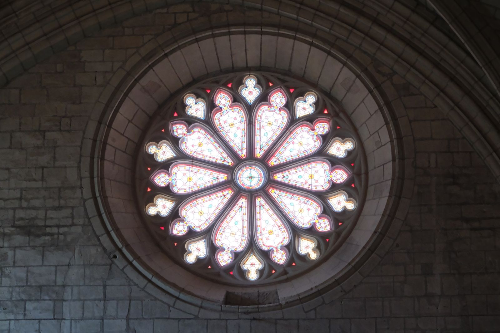

The West Rose of St Cuthbert's, Aldburgh
The brief
The commission asked for “the rose window restored” after a winter storm flexed the east petal and dropped grit onto the sill below. What they wanted was a single reassuring intervention. What the window needed was first to be read.
The decisions
The survey mapped all twelve panels and graded them (the map and register are the report's front page — they are reproduced on The Window). The dating is given as a range and no tighter: the pot-metal palette and the grisaille pattern are consistent with c.1280–1320, and two panels carry later work — a 19th-century repair in Panel 2, retained and recorded rather than replaced, because it is now part of the window's history too.
Nine panels were treated: two critical (Grades D) to the bench for conservation and partial releading, three deteriorating (C) to the bench, four stable (B) cleaned and consolidated where they hang. Two sound panels (A) needed nothing but watching. And Panel 7 — the south petal, carrying the finest medieval paint survival in the window beneath later overpaint — was refused. See Case File 02 for how that argument works; it was first made here.
The outcome
The window is stable and documented: every treated panel photographed before, during and after; every piece of glass that came out was cleaned, labelled and archived in the church's own store, available to any future conservator. The commission's faculty application quoted the plan from the same tables printed on this site: 166 conservation hours, six scaffold weeks, and a monitoring visit every March. The storm that started the file is now just the reason the window has a report.

“The report told us to leave our most precious panel entirely alone — and explained why so clearly that the whole commission voted for restraint. That is when we knew we had hired the right conservator.”